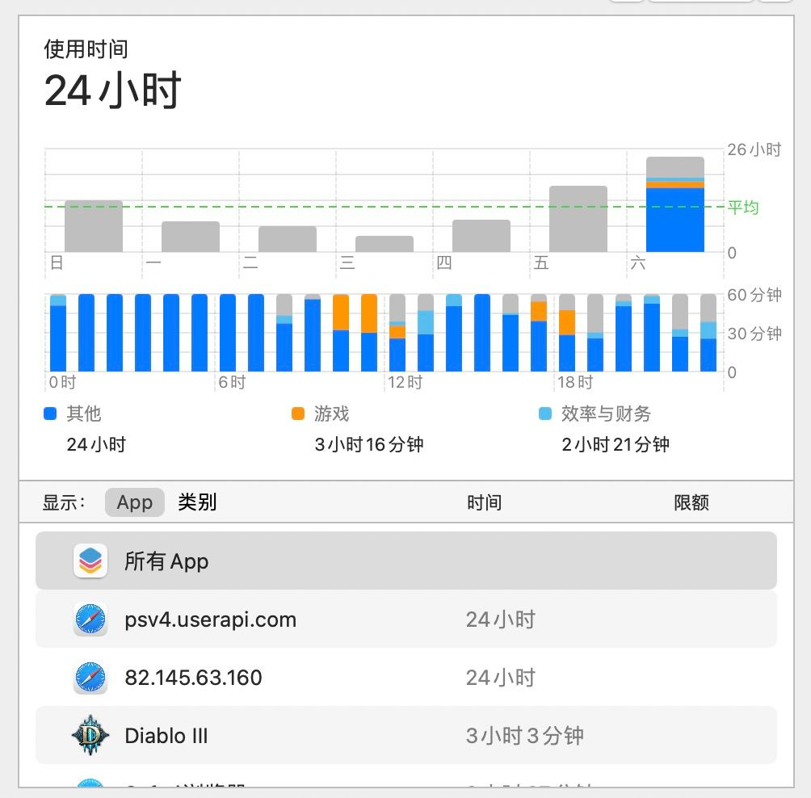
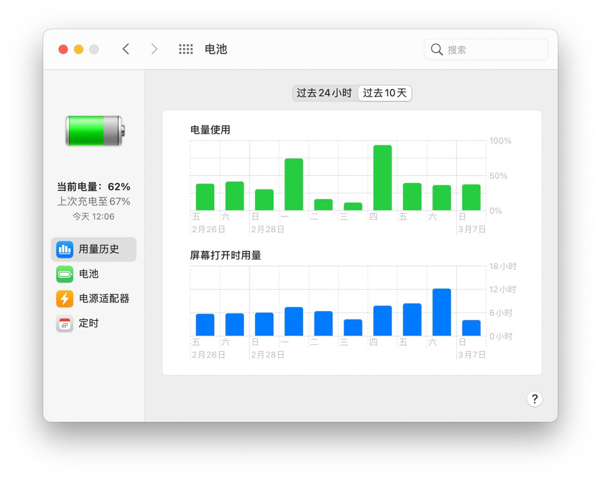
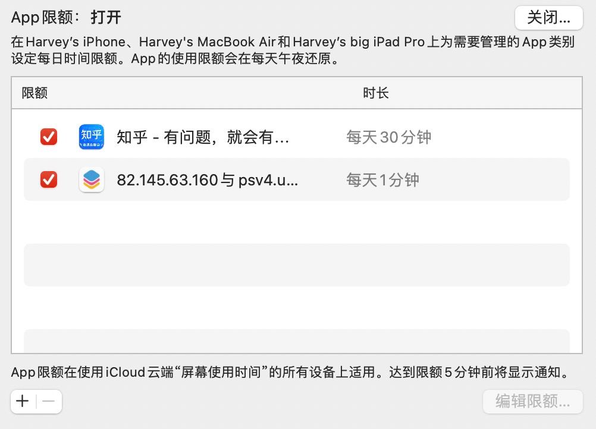
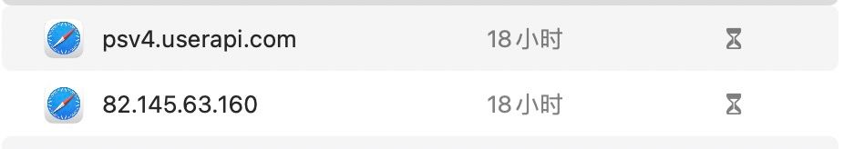
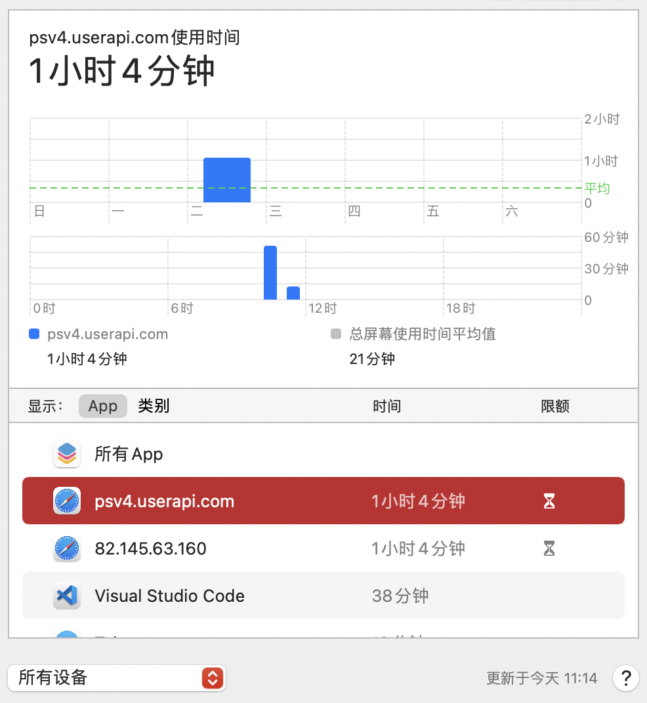

关于「屏幕使用时间」出现 24 小时使用量的 bug
2021年以来，M1 Mac 的硬盘读写量超标 成了大家广泛关注的焦点。我的 MacBook Air 也不幸中招，购买两个月读写量就双双突破 10T，照此速率，四年后就要超过我的上一台 MacBook Pro 四分之一有余了。在排查原因过程中，我发现从上周开始，在「屏幕使用时间」里，有两个网站每天都能使用 24 小时：

这问题可够恶心的，毕竟据大家回报，kernal_task 是这次高读写量的罪魁祸首（之一），但其内容不透明，导致任何高强度长时间处于使用状态的进程，都值得成为我的怀疑对象。但上网一查，发现这个问题 早已有之，至少去年 11 月 Big Sur 实装之后就已出现。这样一来，网站常驻「屏幕使用时间」似乎就和磁盘读写量没啥关系了——毕竟我买来两个月，直到前几天才出现这个问题，而磁盘读写量的问题却是早已有之。
但话虽如此，这个问题却不能坐视不管，毕竟有两个进程在疯狂刷时间，我的屏幕使用时间统计（虽然我也不看）被扭曲了。基于此，这个问题我非解决不可。
问题分析
这个问题从上周六（2021-03-06）开始出现，psv4.userapi.com 和 82.145.63.160 这两个网站，突然吃满了屏幕时间，哪怕是笔记本盒盖休眠也照用不误。观察电池统计数据，发现这一天虽然我用了 12h 的笔记本，但怎么也没有达到 24h 这么一个令人瞠目结舌的数字。

这样一来，只有两种可能：或者是这两个进程在后台偷偷占住了，导致「屏幕使用时间」把它们统计了进去；或者是系统出了 bug，导致某些网页会被莫名统计进去。
问题排查 1：后台占用
先假设是确实发生了后台占用。打开「活动监视器」，发现这两个网站虽然每时每刻都在运行，但进程中全然不见它们的踪影。看来杀进程是派不上用场了。而除此之外，限制 App / 网站使用最好的办法，就是在「屏幕使用时间」中为 App / 网站添加限额，到时会弹出提醒。于是乎，我给这两个网站分别设置了 1 分钟的限额，以观后效。

计划很完美，我甚至看到弹出了限额通知（可惜没有截图）。但第二天（2021-3-9），「屏幕使用时间」里，这两个崽种还是时时刻刻在运作：

这也从事实上证明，第一条路子走不通。
问题排查 2：系统 bug
第一条路是个死胡同，我就去网上查其他人有没有碰到类似情况。无独有偶，Reddit、Apple Community 上都有用户反馈类似情况。虽然在其他人的反馈中，出现问题的网页是 YouTube、Twitter 之类的，平台也包括了 iPhone，但性质总归是相通的。Apple Community 上，大家普遍认为这是个 bug，Reddit 上一些人也有同样观点，但 Reddit 老哥更进一步，认为可能是这些进程在后台挖矿。这个想法虽然说天马行空，但也不是全无可能。
说到这里，似乎有必要谈谈这俩是什么链接。psv4.userapi.com 倒好解释，是老毛子网站 vk.com 下载东西用的域名。我周五也似乎确实用这个网站下载了些东西，但下载之后就把相关网站关掉了，且之前也没有出现过长时间占用的问题。
第二个 IP 地址就更为搞笑了，是给 macOS 替换图标的 macosicons 的 IP。我是不觉得这个网站有什么「拿用户电脑悄悄挖矿」的必要，毕竟「Buy me a coffee」光明正大地挂在那儿。
所谓「遇事不决就重启」，我也打算把这个当成最后的筹码。重启之后，我第一时间截屏留证了这两个网站的屏幕时间使用情况：

奇迹出现了：这两个网站的屏幕使用时间，还真就定格在了 1 小时 4 分钟。
总结
绕了这么大一圈，最后居然是用最无脑、最受诟病的解决方案根除了问题。只能说重启虽然听上去很像是懒人一招鲜，但有的时候真的能吃遍天。
欢迎将您的想法、评论、意见、建议发送至 harveyjanson@icloud.com，请注明「讨论」字样，我会尽量回复。
关于「屏幕使用时间」出现 24 小时使用量的 bug
http://harveyjanson.github.io/2021/03/09/2021-03-09-screen-time-24h-bug/